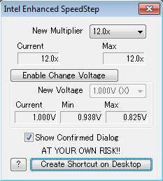

Steward
分享是一種喜悅、更是一種幸福
手機 - Fujitsu LOOX F-07C - x86 - 超頻(CPU 1.2GHz)
由於F-07C機器的機身真的相當細小，應該是當今最小的x86可攜式電腦，但是東西一旦變小後，雖之而來的散熱問題也跟著浮現，加上Intel CPU總是圍繞著高耗電、容易發熱等相關問題，因此最快速、好用的解法就是降頻，所以F-07C機器在開機運作時，CPU速度是以600MHz運行，不過Fujitsu原廠並沒有強制限定600MHz，因此，使用者可以使用https://docs.google.com/file/d/0BzVU0vOuWe-sYThDaVZxMHozNHc/edit?usp=sharing超頻，將CPU速度調整到1.2GHz的速度，設定參考如下設定
CrystalCPUID.exe => Function => Intel Enhanced SpeedStep

P.S. New Multiplier可以看成CPU速度(Ex: 10 > 1GHz)，電壓建議調整到1V